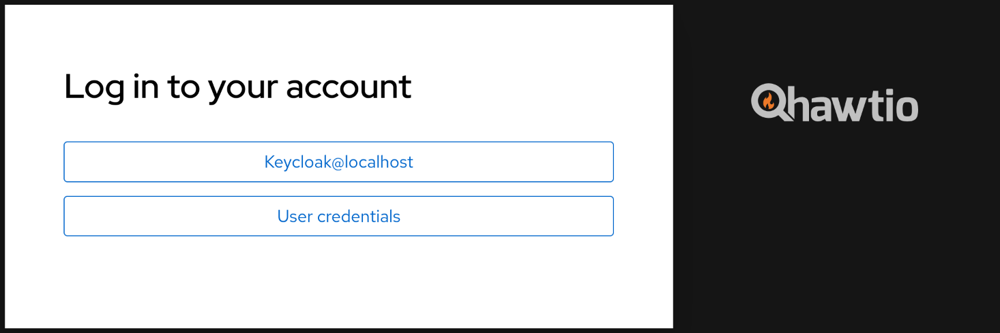

Security
Hawtio enables authentication out of the box in three supported runtimes/environments:
Because the authentication mechanisms may vary between these environments (for example there’s no JAAS support in Hawtio Quarkus) there may be a need to provide some configuration. User may also disable the authentication entirely.
Generic Configuration properties
The following table lists the Security-related configuration properties for the Hawtio core system. These are not specific to any selected deployment method, but may have some special flavors in a given environment (like Keycloak configuration).
| Name | Default | Description |
|---|---|---|
|
|
This option may be used to disable authentication if needed. |
|
|
Whether to throttle authentication attempts to protect Hawtio from brute force attacks. |
|
|
Whether to return HTTP status 401 when authentication is enabled, but no credentials have been provided. Returning 401 will cause the browser popup window to prompt for credentials. By default this option is |
|
|
The security realm used for the authentication. This is the value sent with |
|
|
The user roles expected for the user being authenticated. Multiple roles can be separated by a comma. Set to |
|
A list partially detected from configured JAAS login modules, including |
Fully qualified class name(s) implementing |
|
A list partially detected from configured JAAS login modules, including |
Fully qualified class name(s) implementing |
|
|
Whether to enable or disable Keycloak integration. This is a native Keycloak integration which depends on Keycloak libraries
availability and additional configuration. See more details in the Keycloak Integration chapter. |
|
|
Keycloak configuration file used for the frontend. Can be specified as |
|
|
A location of OpenID Connection configuration file. This file can be used to configure generic OpenID Connect authentication using
external Identity Provider like Keycloak without any additional libraries. Can be specified as |
|
|
List of used |
|
|
Specify an alternative location for the |
|
|
When using the Tomcat |
RBAC Restrictor
For some runtimes that support Hawtio RBAC (role-based access control) [1], Hawtio provides a custom Jolokia restrictor implementation that provides an additional layer of protection over JMX operations based on the ACL (access control list) policy.
| You cannot use Hawtio RBAC with Quarkus and Spring Boot yet. Enabling the RBAC restrictor on those runtimes only imposes additional load without any gains. |
To activate the Hawtio RBAC restrictor, configure the Jolokia parameter restrictorClass via System property to use io.hawt.web.RBACRestrictor as follows:
jolokia.restrictorClass = io.hawt.system.RBACRestrictorQuarkus
Hawtio can be secured with the authentication mechanisms Quarkus provides, as well as Keycloak.
if you want to disable Hawtio authentication for Quarkus, add the following configuration to application.properties:
quarkus.hawtio.authenticationEnabled = false
Authentication in Hawtio deployed with Quarkus does not use JAAS and relies only on injected io.quarkus.security.identity.IdentityProviderManager interface.
|
Quarkus authentication mechanisms
Hawtio is just a Web application in terms of Quarkus, so the various mechanisms Quarkus provides can be used to authenticate Hawtio in the same way it authenticates a Web application.
Here we show how you can use the properties-based authentication with Hawtio for demonstrating purposes.
| The properties-based authentication is not recommended to use in production. This mechanism is for development and testing purposes only. |
To use the properties-based authentication with Hawtio, add the following dependency to pom.xml:
<dependency>
<groupId>io.quarkus</groupId>
<artifactId>quarkus-elytron-security-properties-file</artifactId>
</dependency>You can then define users to application.properties to enable the authentication. For example, defining a user hawtio with password s3cr3t! and role admin would look like the following:
quarkus.security.users.embedded.enabled = true
quarkus.security.users.embedded.plain-text = true
quarkus.security.users.embedded.users.hawtio = s3cr3t!
quarkus.security.users.embedded.roles.hawtio = adminExample
See quarkus example for a working example of the properties-based authentication.
Quarkus with Keycloak
See Keycloak Integration - Quarkus chapter which uses Quarkus OIDC support at server side and Keycloak specific JavaScript library to handle OpenID Connect authentication in the browser.
Spring Boot
While Hawtio on Quarkus completely replaces JAAS with Quarkus specific authentication mechanisms, Spring Boot and Spring Security integrates with JAAS, so Hawtio can use common mechanism to authenticate users with or without Spring Security using JAAS.
The integration is provided by a special JAAS SecurityContextLoginModule, which effectively translates Spring Security org.springframework.security.core.Authentication object into a JAAS javax.security.auth.Subject with
associated list of javax.security.auth.Principals.
This integration is automatically configured by Hawtio when Spring Security configuration is detected.
if you want to disable Hawtio authentication for Spring Boot, add the following configuration to application.properties:
hawtio.authenticationEnabled = falseSpring Security
To use Spring Security with Hawtio, add org.springframework.boot:spring-boot-starter-security to the dependencies in pom.xml:
<dependency>
<groupId>org.springframework.boot</groupId>
<artifactId>spring-boot-starter-security</artifactId>
</dependency>Spring Security configuration in src/main/resources/application.properties should look something like the following:
spring.security.user.name = hawtio
spring.security.user.password = s3cr3t!
spring.security.user.roles = admin,viewerA security config class has to be defined to set up how to secure the application with Spring Security:
@EnableWebSecurity
public class SecurityConfig {
@Bean
public SecurityFilterChain filterChain(HttpSecurity http) throws Exception {
http.authorizeRequests().anyRequest().authenticated()
.and()
.formLogin()
.and()
.httpBasic()
.and()
.csrf().csrfTokenRepository(CookieCsrfTokenRepository.withHttpOnlyFalse());
return http.build();
}
}Example
See springboot-security example for a working example.
Connecting to a remote application with Spring Security
If you try to connect to a remote Spring Boot application with Spring Security enabled, make sure the Spring Security configuration allows access from the Hawtio console. Most likely, the default CSRF protection prohibits remote access to the Jolokia endpoint and thus causes authentication failures at the Hawtio console.
The easiest solution is to disable CSRF protection for the Jolokia endpoint at the remote application as follows.
| Be aware that it will expose your application at risk of CSRF attacks. |
import org.springframework.boot.actuate.autoconfigure.jolokia.JolokiaEndpoint;
import org.springframework.boot.actuate.autoconfigure.security.servlet.EndpointRequest;
@EnableWebSecurity
public class SecurityConfig {
@Bean
public SecurityFilterChain filterChain(HttpSecurity http) throws Exception {
...
// Disable CSRF protection for the Jolokia endpoint
http.csrf().ignoringRequestMatchers(EndpointRequest.to(JolokiaEndpoint.class));
return http.build();
}
}To secure the Jolokia endpoint even without Spring Security’s CSRF protection, you need to provide a jolokia-access.xml file under src/main/resources/ like the following (snippet) so that only trusted nodes can access it:
<restrict>
...
<cors>
<allow-origin>http*://localhost:*</allow-origin>
<allow-origin>http*://127.0.0.1:*</allow-origin>
<allow-origin>http*://*.example.com</allow-origin>
<allow-origin>http*://*.example.com:*</allow-origin>
<strict-checking />
</cors>
</restrict>Spring Boot with Keycloak
See Keycloak Integration - Spring Boot chapter which uses Spring Security OAuth2 support at server side and Keycloak specific JavaScript library to handle OpenID Connect authentication in the browser.
JakartaEE Web Containers
Hawtio can be deployed to any Servlet API compliant container. The deployment
artifact is a Web Archive (WAR). Most of the configuration is already provided in Hawtio’s WEB-INF/war.xml, but this configuration may be
changed with Generic Configuration properties.
Hawtio authentication is enabled by default. If you want to disable Hawtio authentication, set the following system property:
hawtio.authenticationEnabled = falseThe following sections show container specific configuration options. These options are not specified in Servlet API.
While the standard Servlet API authentication relies on configuring web.xml elements like <login-config>, Hawtio does not use this declarative
security configuration. Hawtio uses custom io.hawt.web.auth.AuthenticationFilter which can be configured using system properties.
|
Jetty
Hawtio can integrate with Jetty JAAS mechanisms. However not all Jetty JAAS modules work out of the box.
Jetty JAAS modules work with Jetty security infrastructure and the important thing is that it requires your web application (WAR) to use <login-config> configuration.
Hawtio provides customized org.eclipse.jetty.security.jaas.spi.PropertyFileLoginModule which is available in io.hawt.jetty.security.jaas.PropertyFileLoginModule class that lifts the restriction of having a <login-config> configuration. Additionally Hawtio provides ready to use *.mod file which can be copied directly to $JETTY_BASE/modules. This file describes Jetty module with references to required Hawtio Jetty library:
[description]
Hawtio JAAS Login Module Configuration for Jetty
[tags]
security
hawtio
[depends]
jaas
[files]
maven://io.hawt/hawtio-jetty-security/<version>|lib/hawtio-jetty-security-<version>.jar
[lib]
lib/hawtio-jetty-security-<version>.jarAfter adding $JETTY_BASE/modules/hawtio-jetty-security.mod file we can add this module (and jaas module) using:
$ cd $JETTY_BASE
$ java -jar $JETTY_HOME/start.jar --add-module=jaas,hawtio-jetty-security
INFO : jaas initialized in ${jetty.base}/start.d/jaas.ini
INFO : hawtio-jetty-security initialized in ${jetty.base}/start.d/hawtio-jetty-security.ini
INFO : copy ~/.m2/repository/io/hawt/hawtio-jetty-security/4.6.1/hawtio-jetty-security-<version>.jar to ${jetty.base}/lib/hawtio-jetty-security-<version>.jar
INFO : Base directory was modifiedTo use authentication with Jetty, you first have to set up some users with credentials and roles. To do that navigate to $JETTY_BASE/etc/ folder and create etc/login.properties file containing something like this:
scott=tiger,user
admin=CRYPT:adpexzg3FUZAk,admin,userYou have added two users. The first one named scott with the password tiger. He has the role user assigned to it. The second user admin with password admin which is obfuscated (see Password Obfuscation in Jetty documentation for details). This one has the admin and user role assigned.
Now create the second file in the same $JETTY_BASE/etc/ directory named login.conf. This is the JAAS login configuration file.
hawtio {
io.hawt.jetty.security.jaas.PropertyFileLoginModule required
debug="true"
file="${jetty.base}/etc/login.properties";
};At last, you have to change the Hawtio configuration:
| Property | Value |
|---|---|
|
|
|
|
|
|
|
|
|
|
When Jetty jvm module is installed, we can specify Hawtio properties in $JETTY_BASE/start.d/jvm.ini:
--exec
-Dhawtio.authenticationEnabled=true
-Dhawtio.realm=hawtio
-Dhawtio.roles=admin
-Dhawtio.userPrincipalClasses=org.eclipse.jetty.security.UserPrincipal
-Dhawtio.rolePrincipalClasses=org.eclipse.jetty.security.jaas.JAASRoleWithout jvm module the above options should be specified as system properties when running java -jar $JETTY_HOME/start.jar.
You have now enabled authentication for Hawtio. Only users with role admin are allowed to log in.
Apache Tomcat
Hawtio configuration properties can be passed to Tomcat using CATALINA_OPTS environment variable. This variable should contain
system properties recognized by Hawtio.
By default, Hawtio authentication is enabled. You can disable authentication in Tomcat by adding this to bin/setenv.sh:
CATALINA_OPTS="$CATALINA_OPTS -Dhawtio.authenticationEnabled=false"Hawtio will auto-detect that it is running in Tomcat. It will add dynamic JAAS login module that will be used to authenticate users
declared in Tomcat’s conf/tomcat-users.xml file. All configuration options related to this file are supported by Hawtio. Additionally,
when the file is modified, Hawtio will reload the user database.
The simplest content of conf/tomcat-users.xml may be:
<?xml version="1.0"?>
<tomcat-users xmlns="http://tomcat.apache.org/xml" version="1.0">
<user username="scott" password="tiger" roles="tomcat"/>
</tomcat-users>The above definition includes single scott user with tiger password assigned with tomcat role.
However Hawtio also supports encoded/hashed password (see more details in Tomcat documentation on CredentialHandler). Tomcat itself may be configured like this:
<?xml version="1.0" encoding="UTF-8"?>
<Server port="8005" shutdown="SHUTDOWN">
...
<GlobalNamingResources>
<Resource name="UserDatabase" auth="Container"
type="org.apache.catalina.UserDatabase"
factory="org.apache.catalina.users.MemoryUserDatabaseFactory"
pathname="conf/tomcat-users.xml" />
</GlobalNamingResources>
<Service name="Catalina">
...
<Engine name="Catalina" defaultHost="localhost">
...
<Realm className="org.apache.catalina.realm.LockOutRealm">
<Realm className="org.apache.catalina.realm.UserDatabaseRealm" resourceName="UserDatabase">
<CredentialHandler className="org.apache.catalina.realm.MessageDigestCredentialHandler" algorithm="SHA-384" />
</Realm>
</Realm>
...
</Engine>
</Service>
</Server>This tells Tomcat that the passwords are hashed using SHA-384 message digest algorithm. With such configuration, conf/tomcat-users.xml may look
like this:
<?xml version="1.0"?>
<tomcat-users xmlns="http://tomcat.apache.org/xml" version="1.0">
<user username="hawtio" password="<salt>$<iteration count>$<digest>" roles="admin,manager,..."/>
</tomcat-users>Hawtio supports all password formats specified in the MessageDigestCredentialHandler documentation.
If you only want users of a special role to be able to login Hawtio, you can set the role name in the CATALINA_OPTS environment variable as shown:
CATALINA_OPTS="$CATALINA_OPTS -Dhawtio.roles=Administrator,Operator"Now the user must be in the Administrator or Operator role to be able to login, which we can set up in the conf/tomcat-users.xml file:
<role rolename="manager"/>
<user username="scott" password="tiger" roles="Administrator"/>Using different JAAS login modules
When deploying Hawtio in an environment where JAAS authentication is used, we can configure additional JAAS login modules that will participate in authentication process.
Knowledge of Java Authentication and Authorization Service is required to properly configure JAAS, as there are important aspects to be aware of when configuring multiple login modules.
Hawtio configures its own login modules (for example io.hawt.web.tomcat.TomcatUsersLoginModule) dynamically, but there’s also a JDK standard
way of telling JAAS about the definition of login modules for named JAAS applications.
We can use the below option to point Hawtio (and JDK itself) to standard JAAS configuration file:
-Djava.security.auth.login.config=/path/to/login.configThis file is structured as documented in JDK like this:
<name used by application to refer to this entry> {
<LoginModule> <flag> <LoginModule options>;
<optional additional LoginModules, flags and options>;
};
<additional applications>Here’s where the concept of Hawtio realm is important. The default realm (when not specified) used by Hawtio is hawtio, but it may be changed using:
-Dhawtio.realm=myrealmThis realm is directly used by JAAS to find a set of login modules and is interpreted as name used by application to refer to this entry.
For example we can have this login.config file (selected using -Djava.security.auth.login.config property):
myrealm {
com.sun.security.auth.module.LdapLoginModule REQUIRED
userProvider="ldap://localhost:389"
authIdentity="uid={USERNAME},ou=users,dc=example,dc=com"
useSSL=false
debug=true;
};Since Hawtio 4.6 we can have multiple login modules declared for hawtio realm (or any other realm defined with -Dhawtio.realm) in
JAAS configuration file. Additionally Hawtio will dynamically add detected login modules to this list (for example by default when running in Tomcat,
io.hawt.web.tomcat.TomcatUsersLoginModule will be added without explicitly declaring it in login.config file).
With pluggable nature of JAAS, it is possible for one Login Module to perform actual authentication (for example by looking up the user in LDAP server) and other modules to perform role/group lookup and mapping.
Multiple Login methods
| This is a new feature introduced in Hawtio 4.6 |
When authentication is enabled, Hawtio console application (in the browser) detects configured authentication methods. There are two categories of authentication variants:
-
authentication using username and password credentials
-
authentication using a token issued by Identity Provider (like Keycloak).
When Hawtio is configured with multiple login modules of different categories, new login screen is presented to the user. For example:

When there’s only one authentication method that accepts username and password, standard login screen is shown.
When there’s only the OIDC/Keycloak authentication method, user is no longer automatically redirected to Identity Provider’s authentication screen, but instead this button is shown:
Keycloak Integration
Hawtio can be integrated with Keycloak for SSO authentication. See Keycloak Integration. This method uses Keycloak specific libraries and configuration files.
| Starting with Keycloak 25.0.0, Keycloak specific login modules are no longer available. Keycloak can be used with Hawtio using OpenID Connect Integration. |
OpenID Connect Integration
For generic OIDC authentication see OpenID Connect Integration. This is also a recommended approach to integrate Hawtio with Keycloak.